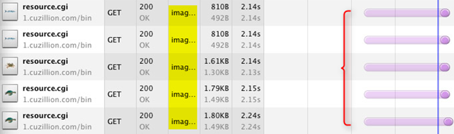

Are you kidding? JS单线程？ Yeah，no kidding.
很多人不理解JavaScript是单线程的却能让AJAX异步发送和回调请求，还有setTimeout也看起来像是多线程的？还有non-blocking I/O, event loop等概念很不清楚。今天我也是刚学习，所以就来记录一下：
首先看下面的代码
function foo() {
console.log( 'first' );
setTimeout( ( function(){ console.log( 'second' ); } ), 5);
}
for (var i = 0; i < 1000000; i++) {
foo();
}
执行结果会首先全部输出first，然后全部输出second；尽管中间的执行会超过5ms。为什么？
Javascript是单线程的
因为JS运行在浏览器中，是单线程的，每个window一个JS线程，既然是单线程的，在某个特定的时刻只有特定的代码能够被执行，并阻塞其它的代码。而浏览器是事件驱动的（Event driven），浏览器中很多行为是异步（Asynchronized）的，会创建事件并放入执行队列中。javascript引擎是单线程处理它的任务队列，你可以理解成就是普通函数和回调函数构成的队列。当异步事件发生时，如mouse click, a timer firing, or an XMLHttpRequest completing（鼠标点击事件发生、定时器触发事件发生、XMLHttpRequest完成回调触发等），将他们放入执行队列，等待当前代码执行完成。
异步事件驱动
前面已经提到浏览器是事件驱动的（Event driven），浏览器中很多行为是异步（Asynchronized）的，例如：鼠标点击事件、窗口大小拖拉事件、定时器触发事件、XMLHttpRequest完成回调等。当一个异步事件发生的时候，它就进入事件队列。浏览器有一个内部大消息循环，Event Loop（事件循环），会轮询大的事件队列并处理事件。例如，浏览器当前正在忙于处理onclick事件，这时另外一个事件发生了（如：window onSize），这个异步事件就被放入事件队列等待处理，只有前面的处理完毕了，空闲了才会执行这个事件。setTimeout也是一样，当调用的时候，js引擎会启动定时器timer，大约xxms以后执行xxx，当定时器时间到，就把该事件放到主事件队列等待处理（浏览器不忙的时候才会真正执行）。
浏览器不是单线程的
虽然JS运行在浏览器中，是单线程的，每个window一个JS线程，但浏览器不是单线程的，例如Webkit或是Gecko引擎，都可能有如下线程：
- javascript引擎线程
- 界面渲染线程
- 浏览器事件触发线程
- Http请求线程
很多人搞不清，如果js是单线程的，那么谁去轮询大的Event loop事件队列？答案是浏览器会有单独的线程去处理这个队列。
Ajax异步请求是否真的异步?
很多童鞋搞不清楚，既然说JavaScript是单线程运行的，那么XMLHttpRequest在连接后是否真的异步?
其实请求确实是异步的，这请求是由浏览器新开一个线程请求（见前面的浏览器多线程）。当请求的状态变更时，如果先前已设置回调，这异步线程就产生状态变更事件放到 JavaScript引擎的事件处理队列中等待处理。当浏览器空闲的时候出队列任务被处理，JavaScript引擎始终是单线程运行回调函数。javascript引擎确实是单线程处理它的任务队列，能理解成就是普通函数和回调函数构成的队列。
总结一下，Ajax请求确实是异步的，这请求是由浏览器新开一个线程请求，事件回调的时候是放入Event loop单线程事件队列等候处理。
setTimeout(func, 0)为什么有时候有用？
写js多的童鞋可能发现，有时候加一个setTimeout(func, 0)非常有用，为什么？难道是模拟多线程吗？错！前面已经说过了，javascript是JS运行在浏览器中，是单线程的，每个window一个JS线程，既然是单线程的，setTimeout(func, 0)神奇在哪儿？那就是告诉js引擎，在0ms以后把func放到主事件队列中，等待当前的代码执行完毕再执行，注意：重点是改变了代码流程，把func的执行放到了等待当前的代码执行完毕再执行。这就是它的神奇之处了。它的用处有三个：
让浏览器渲染当前的变化（很多浏览器UI render和js执行是放在一个线程中，线程阻塞会导致界面无法更新渲染）
重新评估”script is running too long”警告
改变执行顺序
例如：下面的例子，点击按钮就会显示”calculating….”，如果删除setTimeout就不会。因为reDraw事件被进入事件队列到长时间操作的最后才能被执行，所以无法刷新。
<button id='do'> Do long calc!</button>
<div id='status'></div>
<div id='result'></div>
$('#do').on('click', function(){
$('#status').text('calculating....');
//会触发redraw事件的fired，但会放到队列里执行，直到long()执行完。
// without set timeout, user will never see "calculating...."
//long();//执行长时间任务，阻塞
// with set timeout, works as expected
setTimeout(long,50);//用定时器，大约50ms以后执行长时间任务，放入执行队列，但在redraw之后了，根据先进先出原则
})
function long(){
var result = 0
for (var i = 0; i<1000; i++){
for (var j = 0; j<1000; j++){
for (var k = 0; k<1000; k++){
result = result + i+j+k
}
}
}
$('#status').text('calclation done') // has to be in here for this example. or else it will ALWAYS run instantly. This is the same as passing it a callback
}
非阻塞js的实现（non-blocking javascript）
js在浏览器中需要被下载、解释并执行这三步。在html body标签中的script都是阻塞的。也就是说，顺序下载、解释、执行。尽管Chrome可以实现多线程并行下载外部资源，例如：script file、image、frame等（css比较复杂，在IE中不阻塞下载，但Firefox阻塞下载）。但是，由于js是单线程的，所以尽管浏览器可以并发加快js的下载，但必须依次执行。所以chrome中image图片资源是可以并发下载的，但外部js文件并发下载没有多大意义。

要实现非阻塞js（non-blocking javascript）有两个方法：
- html5
- 动态加载js
首先一种办法是HTML5的defer和async关键字：
defer
<script type="text/javascript" defer src="foo.js"></script>
async
<script type="text/javascript" async src="foo.js"></script>
然后第二种方法是动态加载js：
setTimeout(function(){
var script = document.createElement("script");
script.type = "text/javascript";
script.src = "foo.js";
var head = true; //加在头还是尾
if(head)
document.getElementsByTagName("head")[0].appendChild(script);
else
document.body.appendChild(script);
}, 0);
//另外一个独立的动态加载js的函数
function loadJs(jsurl, head, callback){
var script=document.createElement('script');
script.setAttribute("type","text/javascript");
if(callback){
if (script.readyState){ //IE
script.onreadystatechange = function(){
if (script.readyState == "loaded" ||
script.readyState == "complete"){
script.onreadystatechange = null;
callback();
}
};
} else { //Others
script.onload = function(){
callback();
};
}
}
script.setAttribute("src", jsurl);
if(head)
document.getElementsByTagName('head')[0].appendChild(script);
else
document.body.appendChild(script);
}
感谢原文作者:Mainz。
javascriptjavascriptjavascriptjavascriptjavascriptjavascriptjavascriptjavascriptjavascriptjavascript… —-我也不知道我在说啥